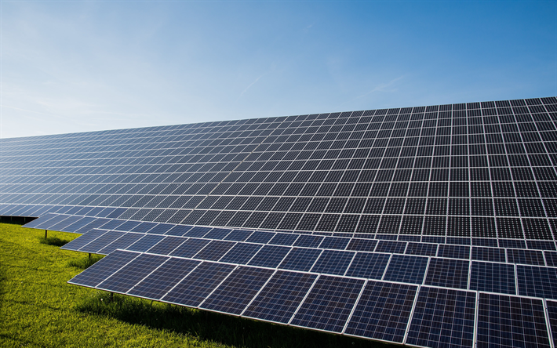
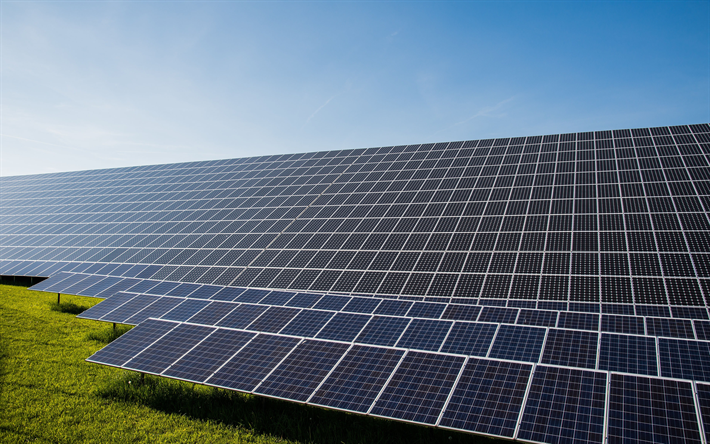

Nanostructures in Pachliopta aristolochiae Wings for Enhanced Solar Panel Efficiency.
Ampogi talaga ni Arfred

Science Concepts Involved
 

 >>>>>>> parent of 516faf5 (Merge pull request #58 from SMC-26/main)
>>>>>>> parent of 516faf5 (Merge pull request #58 from SMC-26/main)
Conclusion
In conclusion, the development of solar panels modeled after the wings of the Pachliopta aristolochiae offers a promising response to the rising need for renewable energy sources while minimizing the negative environmental effects. The replication of the butterfly's nanostructures and the use of thin film hydrogenated amorphous silicon enable improved efficiency at low cost. The solar panels' patterned surface also enables more light absorption at various AOIs, producing a higher output than conventional solar panels.
Improved solar panel longevity and methods to lessen light-induced degradation in thin film hydrogenated amorphous silicon could be the subject of future study. Additionally, looking into additional patterns and designs drawn from nature may result in solar panels that are even more effective and eco-friendly.
It is suggested that greater emphasis should be put on the creation of revolutionary technologies and renewable energy sources. To decrease our dependence on non-renewable resources and lessen the effects of climate change, governments, businesses, and individuals should give renewable energy solutions top priority when investing in and implementing them.
References:
- Asdrubali, F., & Desideri, U. (2019). 2.2.1 The PV Effect. In the Handbook of Energy Efficiency in buildings: A life cycle approach. essay, Butterworth-Heinemann.
- Honsberg, C., & Bowden, S. (2019). Motion of the sun. PVEducation. https://www.pveducation.org/pvcdrom/properties-of-sunlight/motion-of-the-sun
- How does solar work? Energy.gov. (n.d.). Retrieved April 26, 2023, from https://www.energy.gov/eere/solar/how-does-solar-work
- Mostakim, K., & Hasanuzzaman, M. (2022). Solar photovoltaic thermal systems. In Elsevier eBooks (pp. 123–150). Elsevier BV. https://doi.org/10.1016/b978-0-12-823959-9.00005-2
- Oberdorf, I. (n.d.-b). KIT - KIT - Media - Press Releases - Archive Press Releases - Butterfly Wing Inspires Photovoltaics: Light Absorption Can Be Enhanced by Up to 200 Percent. https://www.kit.edu/kit/english/pi_2017_153_butterfly-wing-inspires-photovoltaics-light-absorption-can-be-enhanced-by-up-to-200-percent.php
- Peellden. (2013). Pachliopta aristolochiae interposita. Wikimedia. photograph. https://commons.wikimedia.org/wiki/File:Pachliopta_aristolochiae_interposita.jpg
- Light Induced Degradation (LID) Test, PV specialized laboratory tests. SinoVoltaics (n.d.). Retrieved from https://sinovoltaics.com/light-induced-degradation-lid-test/
- Siddique, R. H., Donie, Y. J., Gomard, G., Yalamanchili, S., Merdzhanova, T., Lemmer, U., & Hölscher, H. (2017). Bioinspired phase-separated disordered nanostructures for thin photovoltaic absorbers. Science Advances, 3(10). https://doi.org/10.1126/sciadv.1700232
- Siddique, R. H. (2017). The Verge. photograph, KIT/Caltech. Retrieved from https://www.theverge.com/2017/10/19/16503258/butterfly-wings-engineering-solar-cell-energy-biomimicry
- Vora, A. (2015). Increasing solar energy conversion efficiency in thin film hydrogenated amorphous silicon solar cells with patterned plasmonic silver nano-disk array (thesis).
- Yirka, B. (2017). Black butterfly wings offer a model for better solar cells. PHYS ORG. https://phys.org/news/2017-10-black-butterfly-wings-solar-cells.html


Introduction
The world needs a constant supply of energy to power new technologies, but relying solely on non-renewable resources such as fossil fuels is not sustainable in the long run. Solar panels are a proven and effective alternative, with the potential to provide enough energy to meet the world's needs for an entire year. The California Institute of Technology and Karlsruhe Institute of Technology have developed solar panels based on the pattern and design of the black rose butterfly's wings, using thin film solar cells that are more cost-effective and efficient than traditional crystal-based cells.
Science Concepts Involved:
Bio
The Black Rose Butterfly (Pachliopta aristolochiae) possesses a very dark color on its wings, allowing for efficient light absorption for heat management of the body (Oberdorf, n.d.-b). The team's researchers, led by Hendrik Hölscher and Radwanul H. Siddique, replicated the butterfly's nanostructures in the silicon-absorbing layer of a thin-film solar cell. Cross-connections between the ridges on the butterfly's wings form disordered "nanoholes" that enhance light absorption (Oberdorf, n.d.-b).
Chem
The solar cell has a semiconductor material made of thin-film hydrogenated amorphous silicon (a-Si:H), a low-cost alternative and takes the shortest amount of time to produce energy. However, it suffers from light-induced degradation — its performance decreases when exposed to the sun for the first few hours (SinoVoltaics, n.d.). In recent research in plasmonics, implementing metallic nanostructures in solar panels has proven to capture sunlight in a wide range of angles, absorb a broad range of wavelengths of light, and provide an independence from polarization state of incident light, which overall improves the light trapping scheme and enhance light absorption by 18.51%, which compensates for the flaw of the semiconductor. (Vora, 2015).
The photovoltaic effect happens in the semiconductor a-Si:H layer. The solar cell captures the light from the sun that directly hits it, and it converts this light into electricity. Solar radiation, also known as electromagnetic radiation, is composed of photons. As the solar panel absorbs it, the semiconductor material absorbs a part of the photons, producing electron-hole pairs. If an electrical circuit is formed, the voltage difference drives the electrons from the negative to the positive side of the junction and creates an electric current in the form of electricity (Asdrubali et al., 2019).
Physics
In normal solar panels, average unpatterned photovoltaic cells (also called PV cells) are arranged in an orderly manner on a flat surface. These PV cells absorb sunlight and create electrical flow. To get the maximum electrical output, the sun’s light has to hit these panels at a perpendicular angle to capture as many photons as possible (Honsberg, C., Bowden, S., 2019).
However, this nanostructure-patterned solar cell design uses holes, and is not a flat surface, which creates a larger surface area on where light rays can hit at an angle. These holes act like funnels, as when light strikes the walls of the holes, reflected light is bounced into the panel and is caught by a second layer of PV cells. Compare this with how light rays are reflected away in the flat solar panel, which causes the panel to lose efficiency without using anti-reflection coating material.
When light hits at a perpendicular angle, the nanostructure-patterned PV cell is 97% more efficient than the average thin-film solar cell, and surprisingly, this is the least efficient angle for the patterned PV cell. When light hits at an angle of 50 degrees, similar to in the diagram above, the patterned PV cell is 207% more efficient than the unpatterned PV cell (Siddique et al, 2017).
Conclusion
The development of solar panels modeled after the wings of the Pachliopta aristolochiae offers a promising response to the rising need for renewable energy sources while minimizing the negative environmental effects. The replication of the butterfly's nanostructures and the use of thin film hydrogenated amorphous silicon enable improved efficiency at low cost. The solar panels' patterned surface also enables more light absorption at various AOIs, producing a higher output than conventional solar panels.